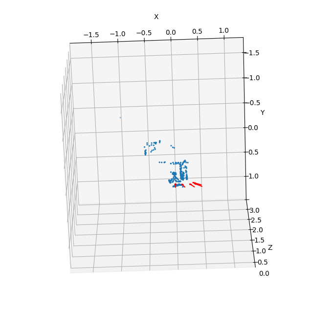
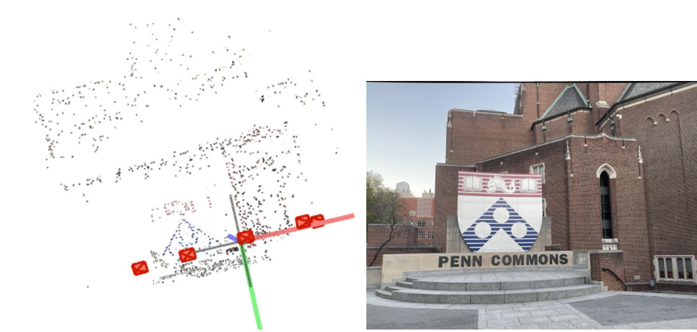
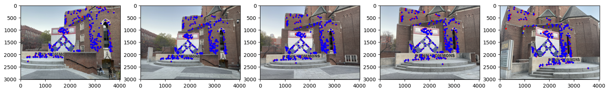

← Back to Projects
Arena Battle Robot — Sensor Fusion & Embedded Control
2025 · University of Pennsylvania · Coursework Project
Python
PyTorch
3D Vision
Bundle Adjustment
Multi-View Geometry
LoFTR
COLMAP
Gallery



Overview
- Multi-View Reconstruction Pipeline: Built an end-to-end 3D reconstruction system from multi-view images, including feature extraction, matching, camera pose estimation, and point cloud generation.
- Bundle Adjustment Optimization: Implemented bundle adjustment in PyTorch to jointly optimize camera poses and 3D structure, minimizing reprojection error across all views.
- Learned Feature Matching: Integrated LoFTR for detector-free feature matching and compared against traditional SIFT features, improving robustness in low-texture and wide-baseline scenarios.
- System Validation & Visualization: Developed reprojection and loss visualization tools to analyze convergence behavior and reconstruction quality.
Highlights
- Implemented full multi-view geometry pipeline from feature matching to 3D reconstruction
- Designed joint optimization (BA) over camera poses and 3D landmarks
- Compared classical vs learned feature matching (SIFT vs LoFTR)
- Achieved stable convergence with reprojection error minimization
- Reconstructed dense and consistent 3D point clouds across multiple views